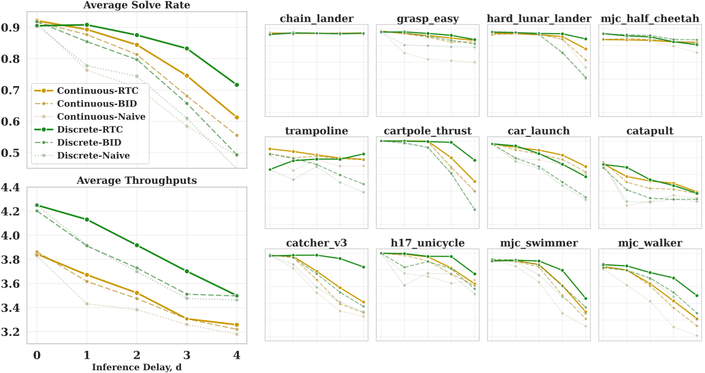
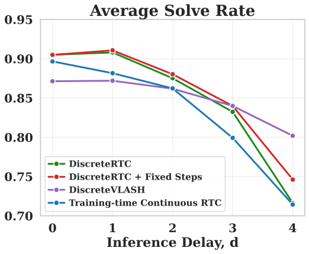

Experiments
Simulated Benchmark: Kinetix

Across all inference delays, DiscreteRTC consistently outperforms ContinuousRTC and other variants on both solve rates and throughputs, showing the great advantages of the native inpainting capability in discrete diffusion policies. Moreover, as shown in Figure 4, DiscreteRTC requires fewer iterative steps than ContinuousRTC, especially under large delays with execution horizon as discussed in Sec. 4.2 of the paper.


Figure 5 presents the experimental results of more variants in Kinetix:
- vs. Training-time Continuous RTC: Under varying delays, DiscreteRTC outperforms Training-time Continuous RTC, which is fine-tuned with an explicit objective and recipe to improve inpainting, further demonstrating the strong performance of the fine-tuning free DiscreteRTC.
- DiscreteRTC + Fixed Steps: By using fixed unmasking steps during inference, this variant achieves better performance by generating more fine-grained actions with the same computation budget.
- DiscreteVLASH: Integrating with VLASH achieves more stable performance across varying delays but at the cost of performance drop with smaller delays. This demonstrates that DiscreteRTC can be seamlessly combined with advanced inference-time methods for further gains.
Real-World Results
We design two dynamical tasks to stress reactiveness: Dynamic Pick and Dynamic Place, where the robot must pick a moving object or place it onto a moving platform. This requires the robot to continuously re-estimate the object pose and execute smoothly.

| Method | Success Rate ↑ | Inference Time ↓ | |
|---|---|---|---|
| Dynamic Place | Dynamic Pick | ||
| Continuous Sync | 0% | 0% | 151 ms |
| Discrete Sync | 0% | 0% | 303 ms |
| Continuous RTC | 90% | 45% | 256 ms (∼1.7×) |
| Discrete RTC (Ours) | 100% | 95% | 206 ms (∼0.6×) |
Table 1: Real-world results on the two dynamical tasks. Success rate over 20 trials per task and average inference time on a single RTX 4090.
Results. Both Sync baselines completely fail (0%), confirming that reactive asynchronous execution is indispensable in these regimes. In terms of success rate, DiscreteRTC outperforms ContinuousRTC with the largest gap on the continuously moving Dynamic Pick target, where reactiveness matters most. In terms of inference time, the two asynchronous methods move in opposite directions: ContinuousRTC inflates flow-matching cost from 151 to 256 ms, a near-1.7× overhead from ΠGDM, whereas DiscreteRTC reduces discrete diffusion cost from 303 to 206 ms with fewer tokens to unmask. Consequently, although Discrete Sync alone is slower than Continuous Sync with naive bin-discretization, DiscreteRTC ends up both faster and more accurate than Continuous RTC — demonstrating that the benefits of RTC and discrete diffusion compound rather than conflict.